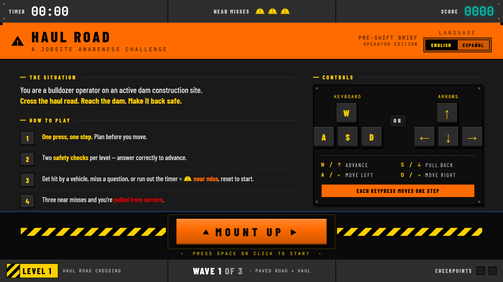

A Frogger-style gamified safety microlearning for heavy equipment operators, built from scratch using a multi-AI development workflow with no project brief, no client, and no SMEs.

Haul Road instructions screen — bilingual English and Spanish support, industrial jobsite aesthetic
The full game is live and playable in your browser. If you work in construction or heavy equipment operations, feedback on whether the content feels right is welcome.
There was nothing in the queue when Claude Design launched. Rather than run a generic test, the challenge became a real question: can a defensible, content-validated, interactive learning artifact be built from scratch using only AI tools, publicly available curriculum standards, and a documented workflow?
The content domain needed to be authentic enough to matter. A childhood memory of watching construction truck videos with my son pointed toward heavy equipment operators, a workforce that is underserved by eLearning and whose safety training has real consequences. That was worth building.
Full ideation, validation, and build executed across four tools in a deliberate sequence, each chosen for what it does best.
Without SME access, external AI validation against published standards was the quality gate. Two items came back flagged and were corrected before the build.
Original question assumed the passenger side is always the larger blind spot on a bulldozer. Perplexity flagged this as too absolute. Blind spots vary by machine model, attachments, and terrain. Replaced with a question asking what operators should assume about blind spots in general.
Corrected before buildOriginal framing implied eye contact alone is the safety standard for ground worker approach. OSHA and NCCER guidance is broader. Both parties must acknowledge each other and the operator must confirm it is safe. Rewritten to reflect the full protocol.
Corrected before buildWalk-around, spotter, haul road, near miss, cab, blade, and ground conditions confirmed as accurate. Blind side updated to blind spot. Eye contact and signal updated to make eye contact and wait for acknowledgment. Yellow iron flagged as informal and used as flavor only.
Language locked before buildCut and fill, ripper, bench, berm, and lift identified as terms a bulldozer operator on a dam site would commonly use. Incorporated into coaching tips and question framing where appropriate to add site authenticity.
Added to question contextThe output quality is strong, and watching it build a functional interactive prototype in real time is genuinely impressive. It took very little back and forth to make visual and mechanical adjustments.
Rushing through the design phase of the process had a visible impact. Elements that were not storyboarded explicitly required more iteration inside the tool. The workflow investment up front in Claude chat paid off. The more detailed the prompt, the cleaner the first output.
Token limits will stop you mid-build. The Spanish version of this game was not finished when the weekly cap was hit. That is a meaningful constraint for any course of real scope. Branching logic, LMS integration, and accessibility compliance are also not there yet, though workarounds are beginning to surface. This is a tool that earns a place in a deliberate workflow. It does not replace the workflow.
Let's talk about how strategic instructional design drives real outcomes in your organization.